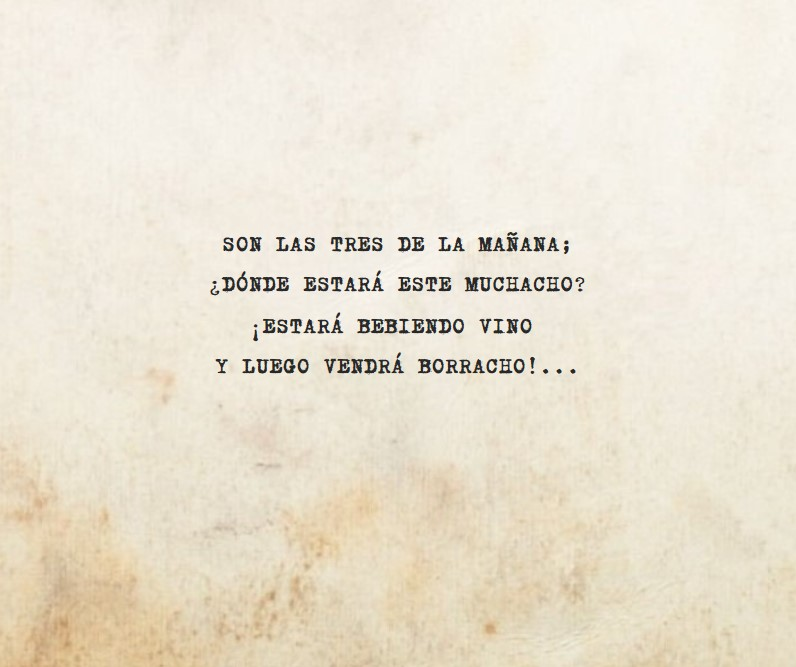
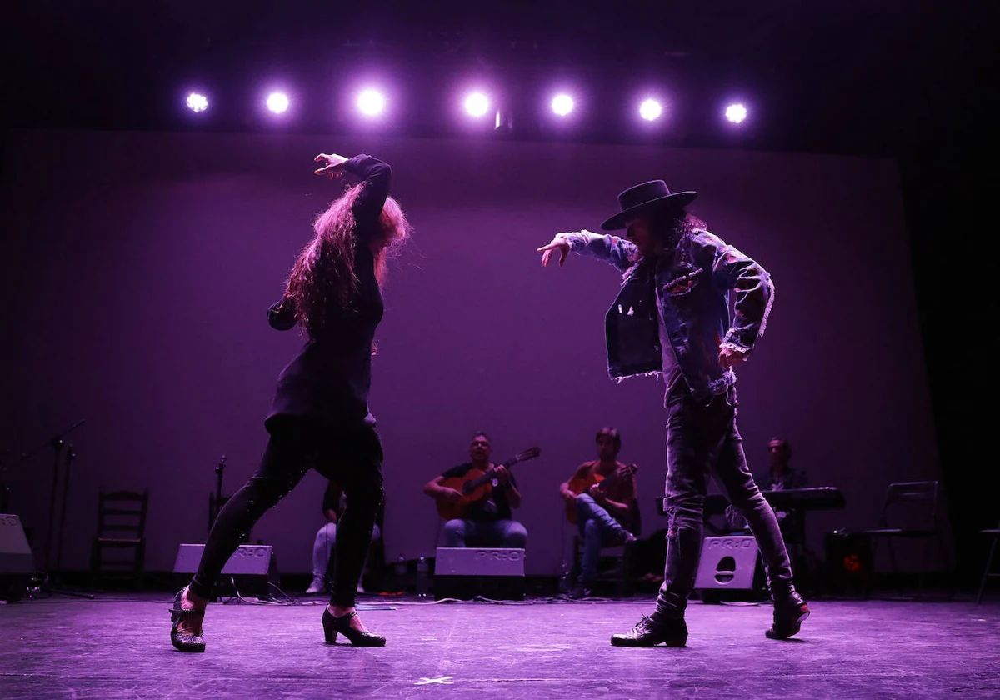

Aquí encontrarás una visión general de los aspectos fundamentales de este apasionante arte. Exploraremos su historia, los distintos palos o estilos, el compás y ritmo que le dan vida, y las letras que cuentan historias de amor, desamor, alegría y tristeza. Esta guía está diseñada para ofrecerte una comprensión básica del flamenco y despertar tu interés por aprender más. ¡Vamos a sumergirnos en el mundo del flamenco!
El flamenco es un arte rico y complejo que ha evolucionado a lo largo de varios siglos, arraigado en la región de Andalucía, en el sur de España.
Su historia es un tapiz entrelazado de influencias culturales diversas, incluyendo gitanas, moriscas, judías y cristianas.
Aunque los orígenes exactos del flamenco son objeto de debate, se cree que comenzó a tomar forma en el siglo XVIII. Durante este tiempo, los cantes,
bailes y toques que conocemos hoy como flamenco comenzaron a desarrollarse y a diferenciarse de otras formas musicales de la región.
A lo largo de los siglos XIX y XX, el flamenco continuó evolucionando y ganando popularidad. Los cafés cantantes, que eran locales donde se realizaban
espectáculos de flamenco, jugaron un papel crucial en esta época, proporcionando un espacio para que los artistas flamencos se presentaran y experimentaran
con nuevas formas y estilos.
Hoy en día, el flamenco es reconocido en todo el mundo por su pasión, su técnica y su belleza. Fue declarado Patrimonio Cultural Inmaterial de la Humanidad
por la UNESCO en 2010, y sigue siendo una parte vital de la cultura española y un símbolo de su diversidad cultural.
Aunque el flamenco ha cambiado mucho a lo largo de los años, su espíritu de expresión emocional y su conexión con las luchas y alegrías de la vida siguen siendo tan relevantes hoy como siempre.
Conoce la historiaLos palos del flamenco son las distintas formas musicales que componen este arte tan rico y variado. Cada palo tiene su propio compás, melodía, letras y estilo de baile, lo que los hace únicos y distintos entre sí. Los palos pueden clasificarse según diferentes criterios, como su origen geográfico, el tipo de compás que utilizan o las emociones que evocan.
Desde los ritmos alegres y festivos de las bulerías y sevillanas, hasta las profundas y emotivas tonás y seguiriyas, cada palo del flamenco ofrece una ventana a una faceta diferente de la cultura y la historia de Andalucía. Algunos palos son antiguos, con raíces que se remontan a siglos atrás, mientras que otros son más recientes, fruto de la evolución y la experimentación continua de los artistas flamencos.
Ver Palos del Flamenco.png)
El compás es uno de los elementos fundamentales del flamenco, proporcionando la estructura rítmica que sostiene cada palo. En el flamenco, el compás no
es solo un patrón rítmico, sino una sensación profunda que impregna cada aspecto de la música y el baile.
Cada palo flamenco tiene su propio compás característico, que puede variar en complejidad desde el simple compás de 4/4 de las sevillanas hasta el complejo
compás de 12 tiempos de la soleá y la bulería. El compás no es solo una cuestión de contar tiempos, sino que también implica un acento particular y un "aire"
o "swing" distintivo.

Aprender a sentir y a seguir el compás es una habilidad esencial para cualquier aficionado al flamenco, ya sea cantante, guitarrista o bailaor. Es el compás
lo que permite a los artistas flamencos improvisar dentro de la estructura de cada palo, creando la tensión y la liberación emocional que son tan características
del flamenco.
Así que, ya sea que estés escuchando un profundo cante por soleá o viendo un emocionante baile por bulerías, recuerda: ¡todo empieza con el compás!
El ritmo en el flamenco es fundamental y se entrelaza intrínsecamente con el compás. Es el ritmo el que da vida a la música y el baile, proporcionando la cadencia y el pulso que llevan al espectador a través de la actuación.
Cada palo flamenco tiene su propio ritmo característico, que puede ser tan simple como un ritmo constante de 4/4 en las sevillanas, o tan complejo como el compás de 12 tiempos en las bulerías. Pero más allá de los patrones rítmicos, el ritmo en el flamenco también se trata de cómo se siente la música. Es el acento en ciertos golpes, el silencio en otros, la tensión y liberación que se crea a través de la música y el baile.
Es importante destacar que la métrica flamenca es eminentemente ternaria, se realiza sobre compases de tres tiempos. Este ritmo ternario es una parte fundamental del flamenco y se encuentra presente en palos como el fandango y la sevillana.
En el flamenco, el ritmo no es solo una cuestión de tiempo, sino una forma de expresión. Los artistas flamencos utilizan el ritmo para contar una historia, para expresar una emoción, para conectar con el público. Ya sea a través del rápido taconeo de un bailaor, el apasionado cante de un cantante, o el melódico rasgueo de una guitarra, el ritmo está en el corazón de cada actuación flamenca.
Así que, ya sea que estés escuchando un profundo cante por soleá o viendo un emocionante baile por bulerías, recuerda: ¡todo empieza con el compás y el ritmo ternario!
Las letras en el flamenco son una expresión profunda de las vivencias y emociones de los artistas. Son más que simples palabras; son una ventana a su alma, reflejando sus alegrías, penas, amores y pérdidas.

Cuando un artista flamenco sufre, su dolor se manifiesta en sus letras, creando una conexión profunda y emotiva con el público. Esta autenticidad emocional se manifiesta de tal manera que, cuando un cantaor o cantaora expresa su sufrimiento a través de su música, el público no solo escucha, sino que también siente ese sufrimiento.
Las letras abarcan una amplia gama de temas, desde el amor y la pasión hasta la muerte y el duelo, pasando por la religión, la naturaleza, el paso del tiempo y el destino. Cada palo flamenco tiene su propio ritmo y tono característicos, lo que se refleja en las letras asociadas a ese palo. Por ejemplo, las seguiriyas a menudo tratan sobre la muerte y el duelo, mientras que las bulerías son más alegres y festivas.
Además de la temática, las letras flamencas también son conocidas por su métrica y ritmo únicos. Al igual que los poemas, las letras de los cantes flamencos tienen su propia métrica, formada por versos o tercios, que suelen ser de 8 sílabas, aunque también existen de seis sílabas, de once y de siete.
El baile flamenco es una forma de expresión poderosa y apasionada que juega un papel crucial en la experiencia flamenca. A través del baile, los artistas pueden transmitir una gama de emociones, desde la alegría hasta la tristeza, la pasión hasta el desamor.
A lo largo de la historia, el baile flamenco ha experimentado una evolución significativa, dando lugar a una variedad de estilos y fusiones, cada uno con sus propias características y encantos. Sin embargo, a pesar de esta constante evolución, el flamenco ha logrado mantener su pureza y esencia.

Desde sus orígenes en Andalucía, el flamenco ha sido influenciado por músicos y bailarines de todo el mundo, adoptando diversas danzas folclóricas y evolucionando con el tiempo. A pesar de su estatus global, el baile flamenco ha conservado su conexión con sus raíces, manteniendo la esencia de su origen en el siglo XV con la llegada de los gitanos a la península ibérica.
Existen diferentes estilos de baile flamenco, cada uno con sus propias características y movimientos. Algunos estilos son rápidos y enérgicos, mientras que otros son lentos y emotivos. Pero todos comparten un compromiso común con la expresión emocional y la conexión con la música y el cante.
El baile flamenco no es solo una serie de movimientos y pasos. Es una conversación entre el bailaor/a y el cantaor/a, el guitarrista y el percusionista. Es una forma de contar historias, de compartir emociones, de celebrar la vida y la cultura.